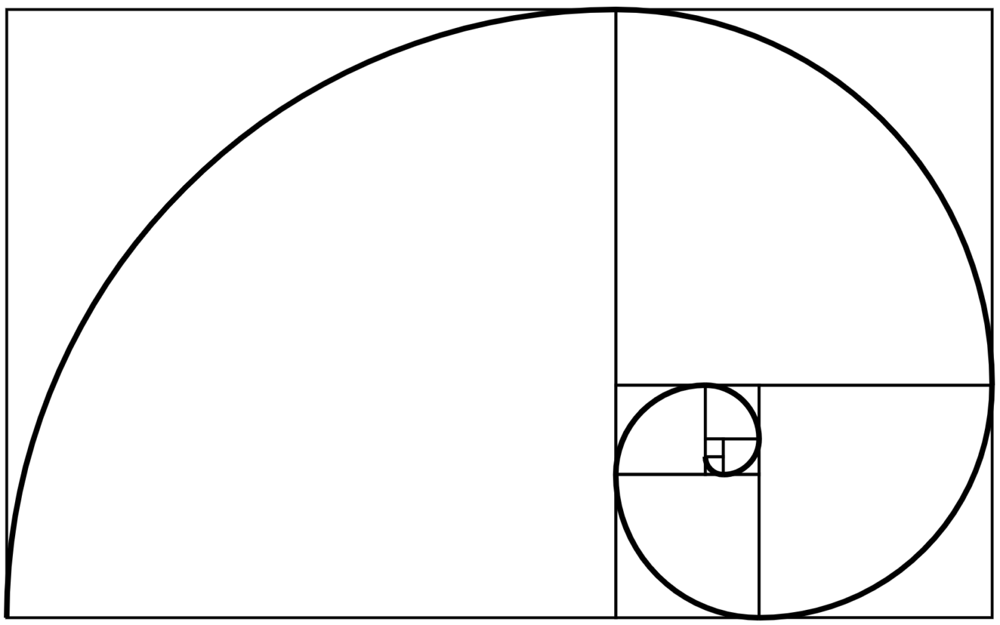

NOTICIAS GONZALO
PROPORCIÓN ÁUREA: QUÉ ES Y CÓMO APLICARLA EN TUS FOTOS
La proporción áurea es el vínculo existente entre una serie de números basados en el número áureo a la que se le otorga una condición estética. Aquello cuya forma respeta la proporción áurea es considerado bello. La proporción áurea ha sido aplicada con éxito en múltiples proyectos, diseños, edificios, fotografía, jugando un papel importante las matemáticas. La proporción áurea también se conoce como razón áurea, número áureo o divina proporción.
La proporción áurea lleva fascinando a matemáticos, pintores y escultores durante cientos de años. La encontramos presente en las matemáticas, la naturaleza, la arquitectura, la pintura y la fotografía; y su nombre lleva implícito belleza, equilibrio y armonía.
A través de una serie de cálculos matemáticos basados en una serie numérica, se establecen los parámetros de estas proporciones agradables a la vista y aplicadas desde la antigüedad en todo tipo de elementos que aspiraban a una perfección formal.

¿QUÉ ES LA PROPORCIÓN ÁUREA?
Desde el Partenón hasta una fotografía que siga la famosa regla de los tercios, una caracola o los pétalos de un girasol, la proporción áurea se encuentra presente en muchísimas cosas que nos rodean.
La proporción áurea se genera a través de una serie numérica conocida como Sucesión (o serie) de Fibonacci. Fibonacci, también conocido como Leonardo de Pisa, fue el célebre matemático que introdujo la numeración árabe en occidente (hasta el momento se utilizaba la romana) y que dio a conocer la sucesión numérica infinita cuyas proporciones se aproximan al número de oro.
¿QUÉ ES LA SERIE FIBONACCI ?
La serie Fibonacci se basa en una sucesión de números infinita. Empezando por 1,1, el resto de números son la suma de los dos anteriores: 1+1=2, 2+1=3, 3+2=5, 5+3=8, 8+5=13, 13+8=21 y así hasta el infinito.
Si dividimos cada número de la serie Fibonacci con el anterior, este valor se aproxima al número áureo o número Phi, cuyo valor es 1,68033988749894…
Si hacemos la división de los números de la serie Fibonacci, obtenemos resultados como por ejemplo: 89/55= 1,61818182 o 144/89= 1,61797753, que como puedes observar se corresponden con el número áureo o Phi.
¿QUÉ ES EL NÚMERO ÁUREO?
El número áureo es un número algebraico irracional (su representación decimal es infinita y no tiene periodo) y se obtiene de la relación o proporción entre dos segmentos de una recta, es decir, de una construcción geométrica.
El número áureo (o número Phi) fue descubierto en la antigüedad y posee muchas propiedades interesantes, ya que esta proporción se encuentra tanto en figuras aritméticas como en la naturaleza. A menudo se le ha relacionado también con lo divino.
LA ESPIRAL ÁUREA O ESPIRAL DE FIBONACCI
A nivel visual, si aplicamos la serie Fibonacci en un rectángulo, obtenemos una espiral con unas proporciones como la siguiente:
SI te fijas bien, verás que la espiral áurea es una versión más compleja de la regla de los tercios que se aplica en pintura y fotografía.